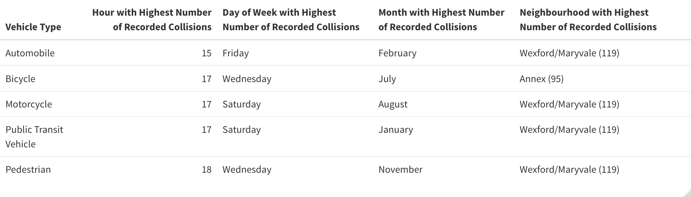
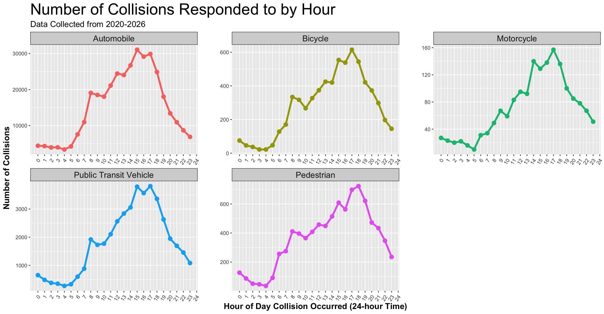
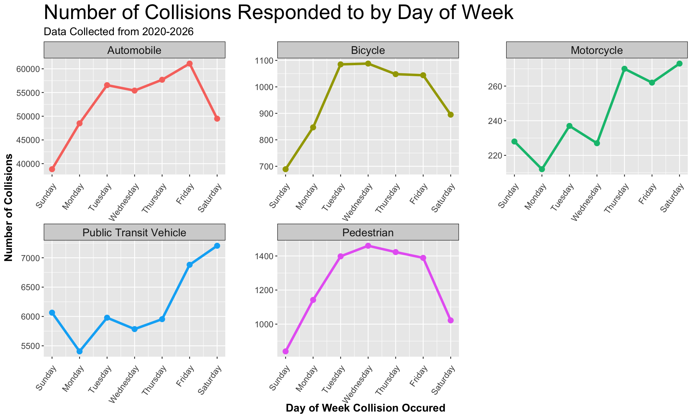
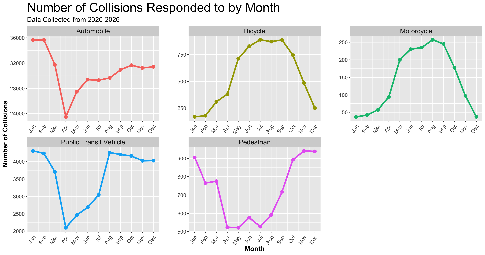
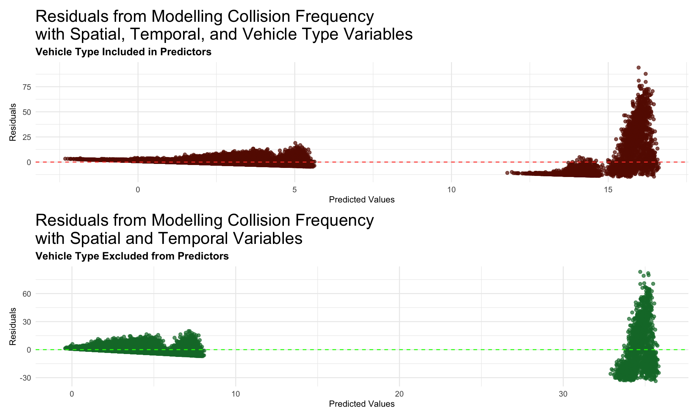

INF2167 Project - Group 7
August 6, 2026
Why is traffic system important?
What temporal and spatial patterns exist in Toronto traffic collisions, and how do collision risks vary across different travel modes?
This project used the R programming language (R Core Team 2026) and the tidyverse library (Wickham et al. 2019) to do reproducible data analysis. High level steps included:
unique() to check that all values make sense for the type of data being reported
group_by() and mutate() to calculate the percentage of total collisions that happened in a given time frame or neighbourhoodpivot_longer() function to melt the vehicle type columns from the original dataframe into one column containing vehicle type (vehicle_type) and another containing the binary cell values (involved_yesno)
Statistical visuals and summary tables were generated using the ggplot2 library from (Wickham et al. 2019), the patchwork library (Pedersen 2025) for concatenated figures, and kableExtra (Zhu [aut et al. 2026) for clean tables.
R syntax:



The first model, overall_model, was run using neighbourhood, hour, day-of-week, month, and vehicle type as predictors, with number of collisions as the outcome variable:
The second model, minus_vt_model, was run to investigate if model performance would improve if vehicle type were removed as a predictor:
To evaluate the models and how well they fit the data side-by-side, the residual errors from both models were plotted versus their respective predictions.

Key Takeaways
Future Research - Incorporate additional variables such as weather and land use to improve explanatory power. - Explore more advanced spatial and spatiotemporal models to better capture collision hotspots. - Extend the analysis with additional years of data to evaluate long-term trends and the impact of future transportation policies.